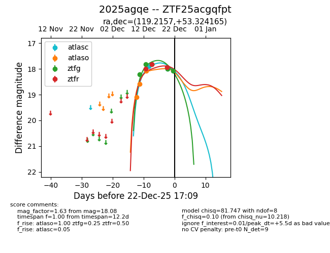
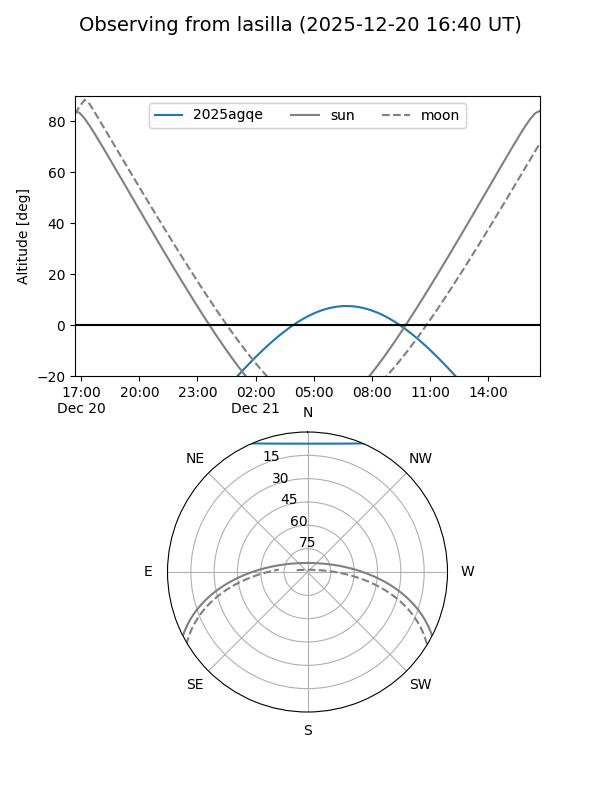
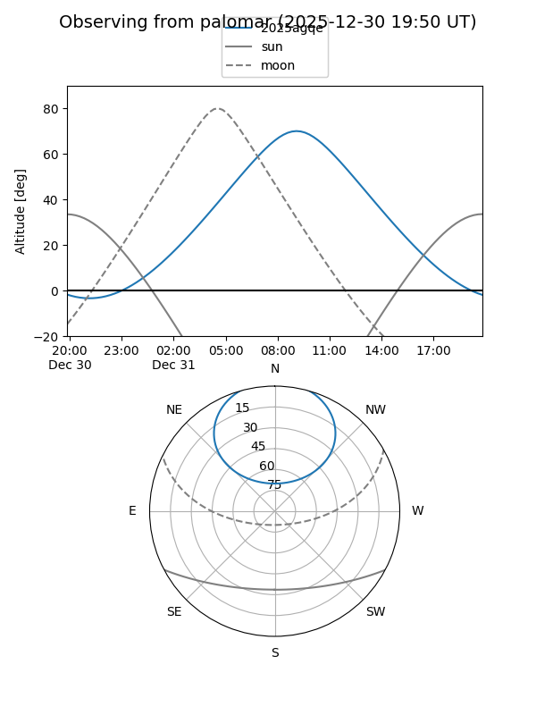
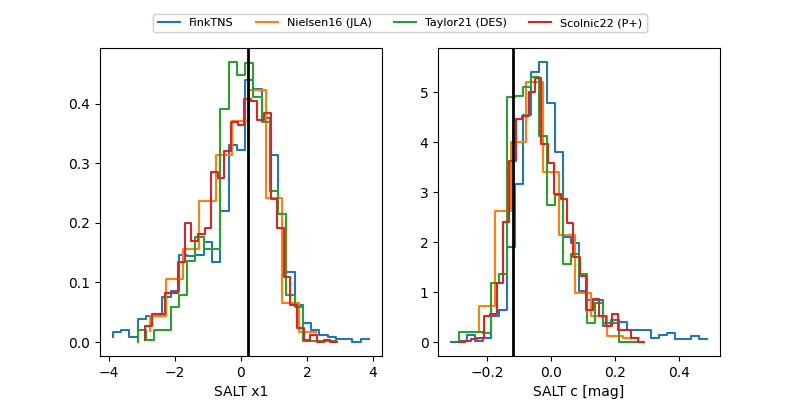

2025agqe
Target 2025agqe at 2025-12-31 18:00
Aliases and brokers:
FINK: link
Lasair: link
ALeRCE: link
TNS: link
YSE: link
alt names
ZTF25acgqfpt (ztf,fink_ztf)
2025agqe (tns,yse)
ATLAS25poi (atlas)
Coordinates:
equatorial (ra, dec) = 119.2157,+53.32416
equatorial (HMS+DMS) = 07:56:51.78,+53:19:26.99
galactic (l, b) = (164.9055,+31.02479)
Flags:
Photometry:
last atlasc=18.25, atlaso=18.19, ztfg=18.31, ztfr=18.11
4 atlasc, 5 atlaso, 7 ztfg, 4 ztfr detections
Lightcurve

Visibility


Additional plots
